AIRBAG SYSTEM > PRECAUTION |
| 1.HANDLING PRECAUTIONS FOR AIRBAG SENSORS |
Before starting the following operations, wait for at least 90 seconds after disconnecting the cable from the negative (-) battery terminal:
Replacement of the airbag sensors.
Adjustment of the front/rear doors of the vehicle equipped with side airbags and curtain shield airbags (fitting adjustment).
When connecting or disconnecting the airbag sensor connectors, ensure that each sensor is installed in the vehicle.
Do not use airbag sensors which have been dropped during operation or transportation.
Do not disassemble the airbag sensors.
| 2.INSPECTION PROCEDURE FOR VEHICLE INVOLVED IN ACCIDENT |
When the airbag has not deployed, confirm the DTCs by checking the SRS warning light. If there is any malfunction in the SRS airbag system, perform troubleshooting.
When any of the airbags have deployed, replace the airbag sensors and check the installation condition.
| 3.SRS CONNECTORS |
SRS connectors are located as shown in the following illustration.
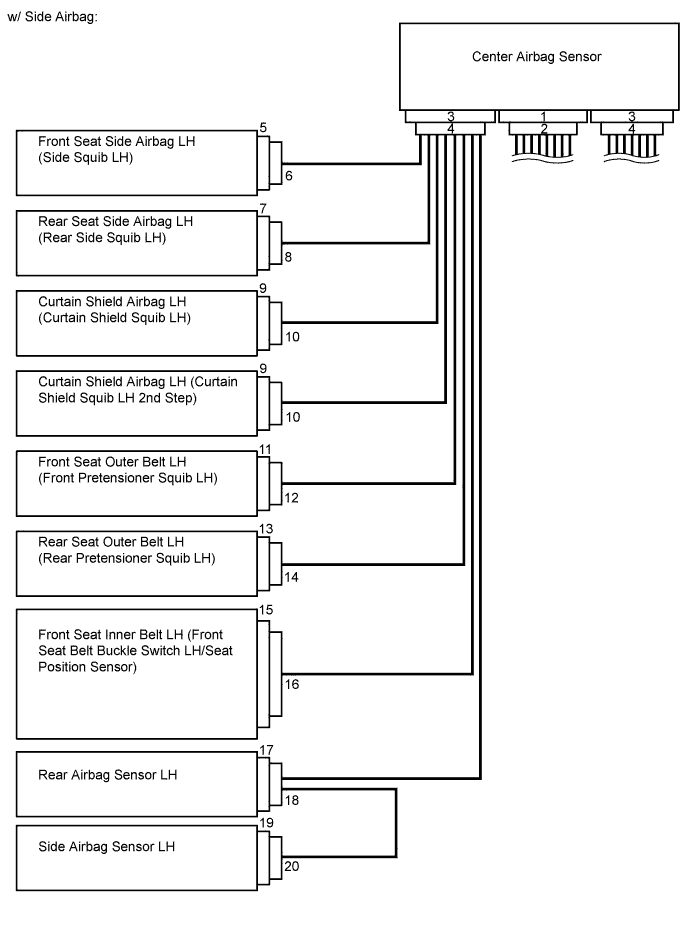
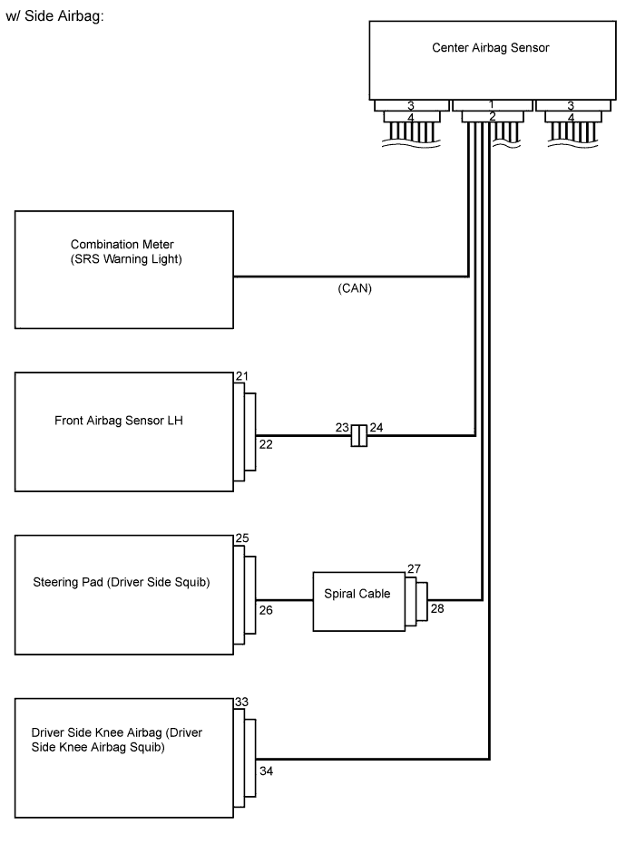
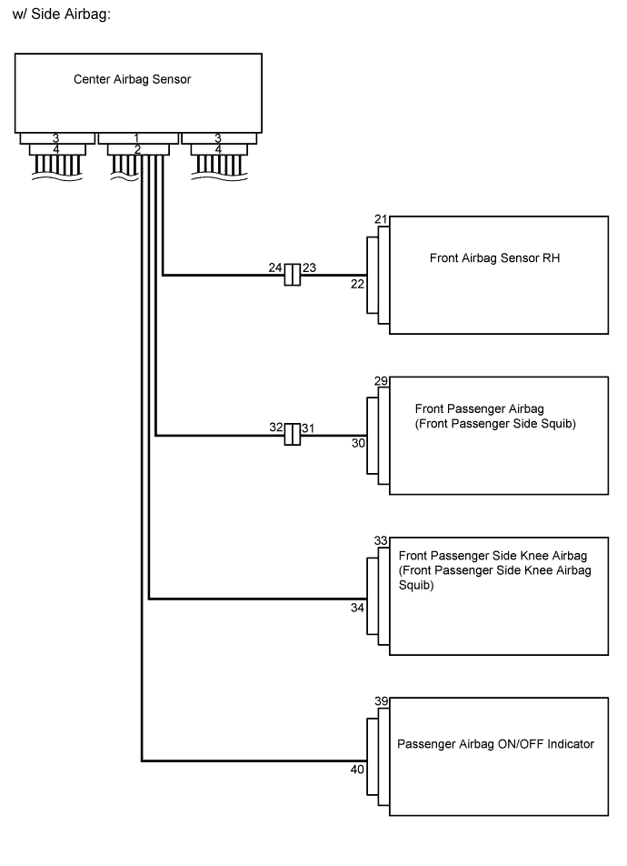
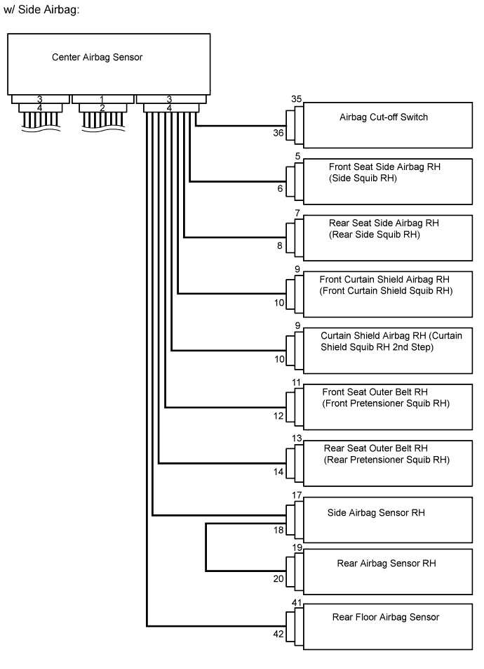
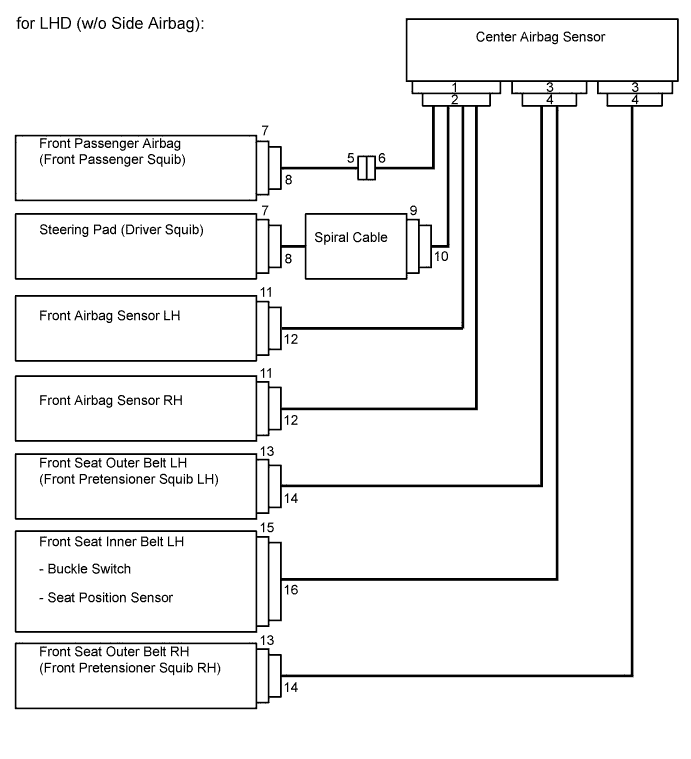
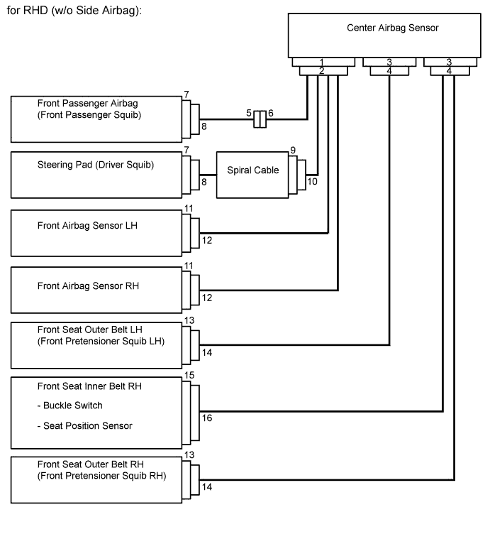
| Item | Application |
| Terminal Twin-lock Mechanism | Connectors 5, 6, 7, 8, 18, 20, 23, 24, 27, 28, 31, 32, 37, 38, 41, 42 |
| Activation Prevention Mechanism | Connectors 5, 7, 27, 31, 37, 41 |
| Half Connection Prevention Mechanism | Connectors 6, 8, 23, 28, 32, 38, 42 |
| Connector Position Assurance Mechanism | Connectors 18, 20, 22 |
| Connector Lock Mechanism (1) | Connectors 10, 12, 14, 26, 30, 34 |
| Connector Lock Mechanism (2) | Connectors 2, 4 |
| Improper Connection Prevention Lock Mechanism | Connectors 1, 3 |
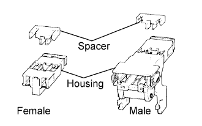 |
All connectors in the SRS, except the seat position sensor connector, are colored yellow to distinguish them from other connectors. These connectors have special functions, and are specially designed for the SRS. All SRS connectors use durable gold-plated terminals which are placed in the locations shown below to ensure high reliability.
Terminal twin-lock mechanism:
All connectors with a terminal twin-lock mechanism have a two-piece component consisting of a housing and a spacer. This design enables the terminal to be locked securely by two locking devices (the retainer and the lance) to prevent terminals from coming out.
Activation prevention mechanism:
All connectors with an activation prevention mechanism contain a short spring plate. When these connectors are disconnected, the short spring plate creates a short circuit by automatically connecting the positive (+) and negative (-) terminals of the squib.
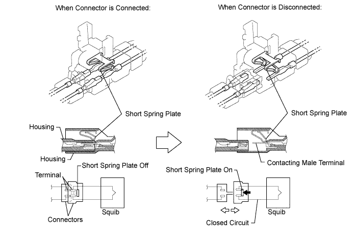
Half connection prevention mechanism:
If the connector is not completely connected, the connector is disconnected due to the spring force so that no continuity exists.
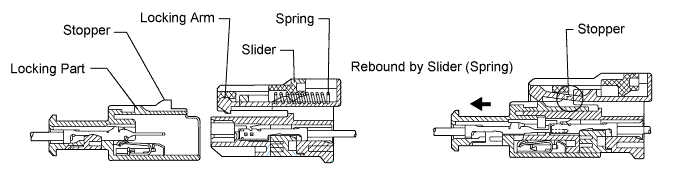
Connector position assurance mechanism:
Only when the housing lock (white part) is completely engaged, the CPA (yellow part) slides, which completes the connector engagement.
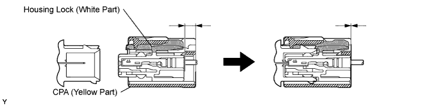
Connector lock mechanism (1):
Locking the connector lock button connects the connector securely.
Connector lock mechanism (2):
Both the primary lock with holder lances and the secondary lock with retainer prevent the connectors from becoming disconnected.
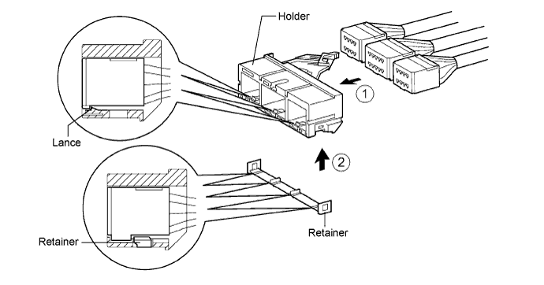
Improper connection prevention lock mechanism:
When connecting the holder, the lever is pushed into the lock position by rotating around the A axis to lock the holder securely.
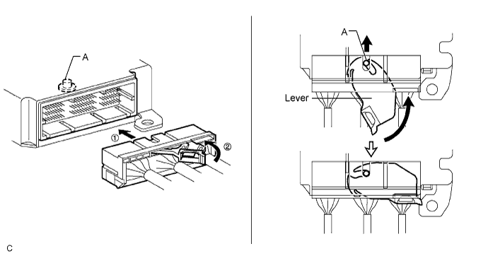
| 4.DISCONNECTION OF CONNECTORS FOR STEERING PAD, FRONT PASSENGER AIRBAG (SQUIB SIDE), DRIVER SIDE KNEE AIRBAG, FRONT PASSENGER SIDE KNEE AIRBAG, CURTAIN SHIELD AIRBAG, FRONT SEAT SIDE AIRBAG (SQUIB SIDE) AND REAR SEAT SIDE AIRBAG (SQUIB SIDE) |
Release the lock button (yellow part) of the connector using a screwdriver.
Insert the screwdriver tip between the connector and the base, and then raise the connector.
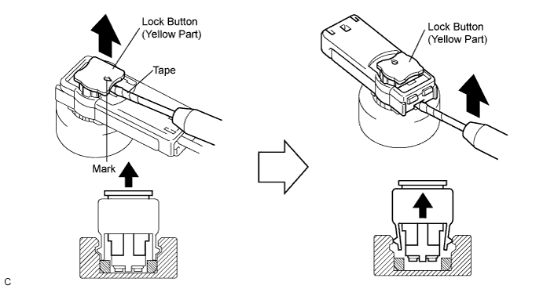
| 5.CONNECTION OF CONNECTORS FOR STEERING PAD, FRONT PASSENGER AIRBAG (SQUIB SIDE), DRIVER SIDE KNEE AIRBAG, FRONT PASSENGER SIDE KNEE AIRBAG, CURTAIN SHIELD AIRBAG, FRONT SEAT SIDE AIRBAG (SQUIB SIDE) AND REAR SEAT SIDE AIRBAG (SQUIB SIDE) |
Connect the connector.
Push down securely on the lock button (yellow part) of the connector (when locked, a click sound can be heard).
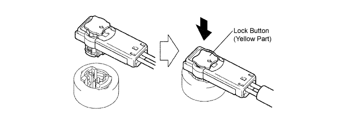
| 6.DISCONNECTION OF CONNECTORS FOR FRONT SEAT OUTER BELT AND REAR SEAT OUTER BELT |
Release the lock button (black part) of the connector using a screwdriver.
Insert the screwdriver tip between the connector and the base, and then raise the connector.
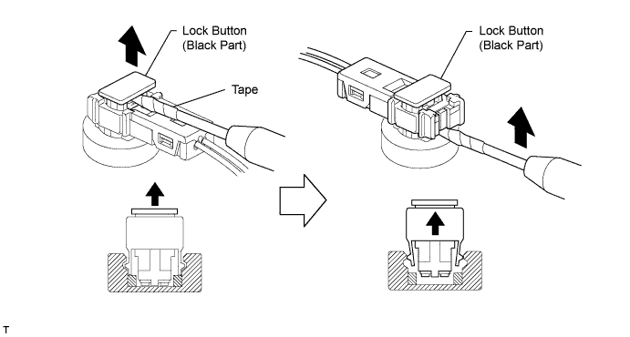
| 7.CONNECTION OF CONNECTORS FOR FRONT SEAT OUTER BELT AND REAR SEAT OUTER BELT |
Connect the connector.
Push down security on the lock button (black part) of the connector (when locked, a click sound can be heard).
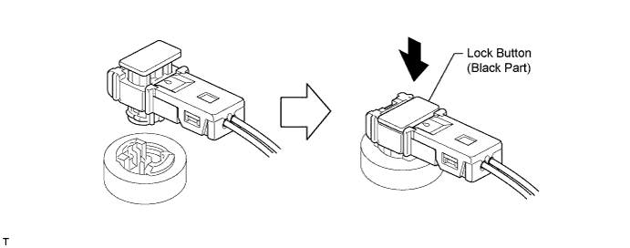
| 8.DISCONNECTION OF CONNECTOR FOR SPIRAL CABLE (INSTRUMENT PANEL WIRE SIDE) AND FRONT PASSENGER AIRBAG (INSTRUMENT PANEL WIRE SIDE) |
Place a finger on the slider, slide the slider to release the lock, and then disconnect the connector.
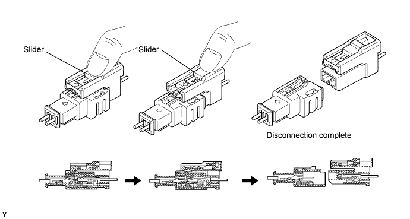
| 9.CONNECTION OF CONNECTOR FOR SPIRAL CABLE (INSTRUMENT PANEL WIRE SIDE) AND FRONT PASSENGER AIRBAG (INSTRUMENT PANEL WIRE ASSEMBLY SIDE) |
Connect the connector as shown in the illustration (when locking, make sure that the slider returns to its original position and a click sound can be heard).
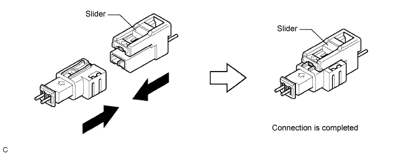
| 10.DISCONNECTION OF CONNECTORS FOR FRONT SEAT SIDE AIRBAG (FLOOR WIRE SIDE) AND REAR SEAT SIDE AIRBAG (FLOOR WIRE SIDE) |
Push the slider with a finger to detach the first claw. Without releasing your finger, slide the slider to detach the second claw and disconnect the connector.
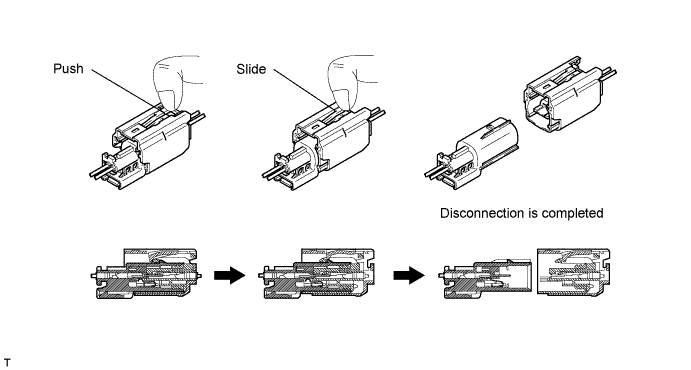
| 11.CONNECTION OF CONNECTORS FOR FRONT SEAT SIDE AIRBAG (FLOOR WIRE SIDE) AND REAR SEAT SIDE AIRBAG (FLOOR WIRE SIDE) |
Connect the connector as shown in the illustration (when locking, make sure that the slider returns to its original position and click sounds can be heard).
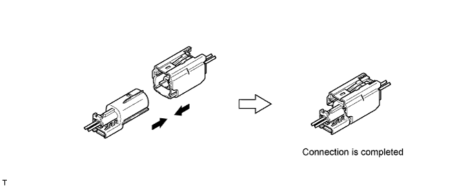
| 12.DISCONNECTION OF CONNECTOR FOR CENTER AIRBAG SENSOR |
Pull the lever by pushing part A as shown in the illustration and disconnect the holder (with connectors).
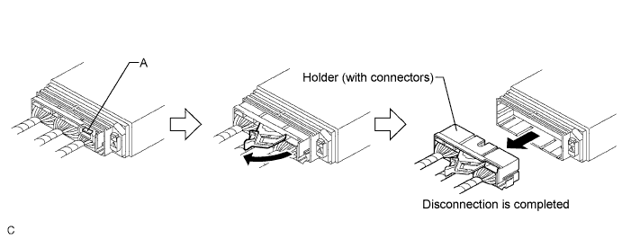
Remove the holder.
Using a screwdriver, unlock the retainer.
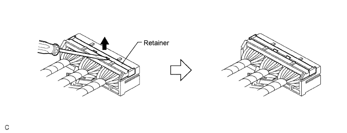
Release the fitting lances and remove the holder.
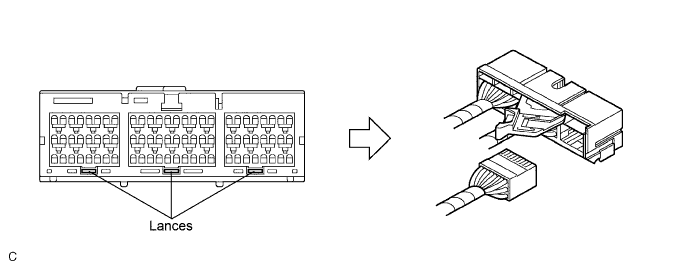
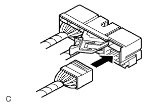 |
Install the holder.
Install the connectors to the holder (when locked, a click sound can be heard).
| 13.CONNECTION OF CONNECTOR FOR CENTER AIRBAG SENSOR |
Firmly insert the holder (with connectors) into the center airbag sensor until it cannot be pushed any further.
Push the lever to connect the holder (with connectors) (when locked, a click sound can be heard).
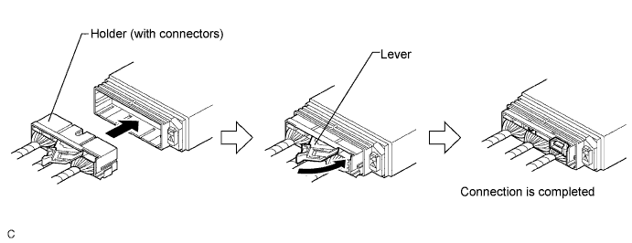
| 14.DISCONNECTION OF CONNECTOR FOR FRONT AIRBAG SENSOR, REAR AIRBAG SENSOR RH AND REAR FLOOR AIRBAG SENSOR |
Push down the housing lock (white part) and slide the CPA (yellow part) (at this time, the connector cannot be disconnected yet).
Push down the housing lock (white part) again and disconnect the connector.
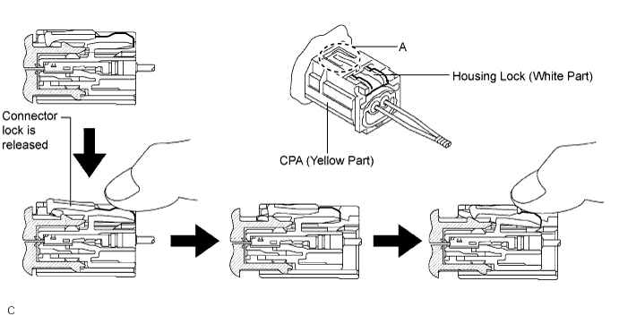
After disconnecting the connector, check that the position of the housing lock (white part) is as shown in the illustration.
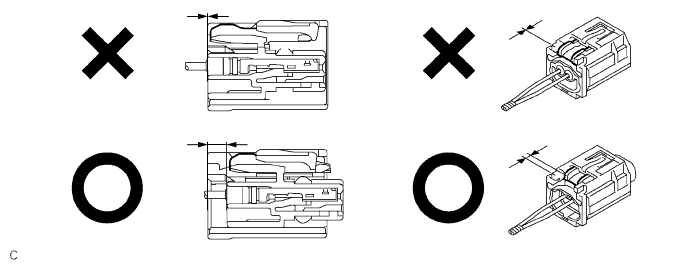
| 15.CONNECTION OF CONNECTOR FOR FRONT AIRBAG SENSOR, REAR AIRBAG SENSOR RH AND REAR FLOOR AIRBAG SENSOR |
Before connecting the connectors, check that the position of the housing lock (white part) is as shown in the illustration.
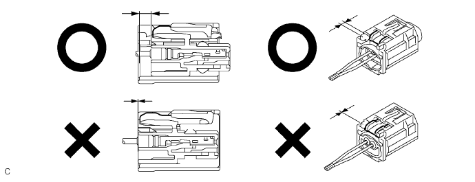
Be sure to engage the connectors until they are locked (when locking, make sure that a click sound can be heard).
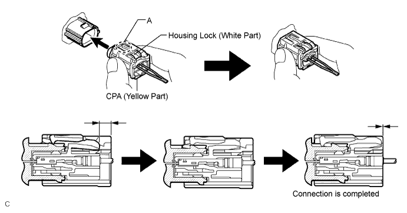
| 16.DISCONNECTION OF CONNECTORS FOR SIDE AIRBAG SENSOR AND REAR AIRBAG SENSOR LH |
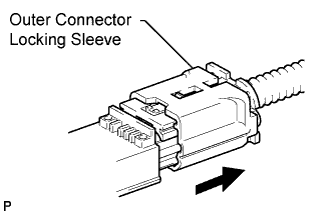 |
While holding the sides of the outer connector locking sleeve, slide the sleeve in the direction shown by the arrow.
When the connector lock is released, the connectors are disconnected.
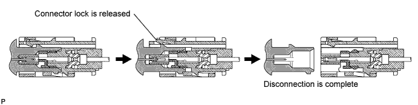
| 17.CONNECTION OF CONNECTORS FOR SIDE AIRBAG SENSOR AND REAR AIRBAG SENSOR LH |
Connect the connector as shown in the illustration (when locking, make sure that the outer connector locking sleeve returns to its original position and a click sound can be heard).
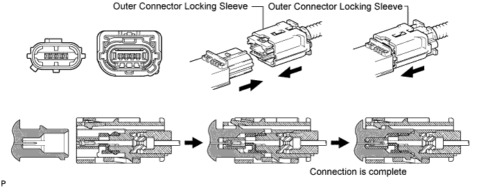